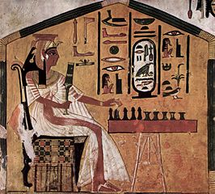
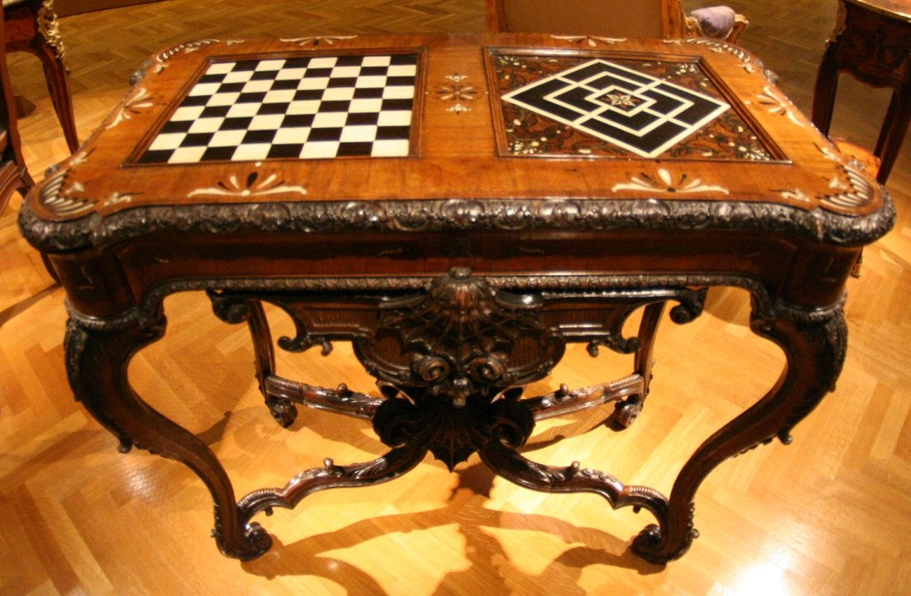
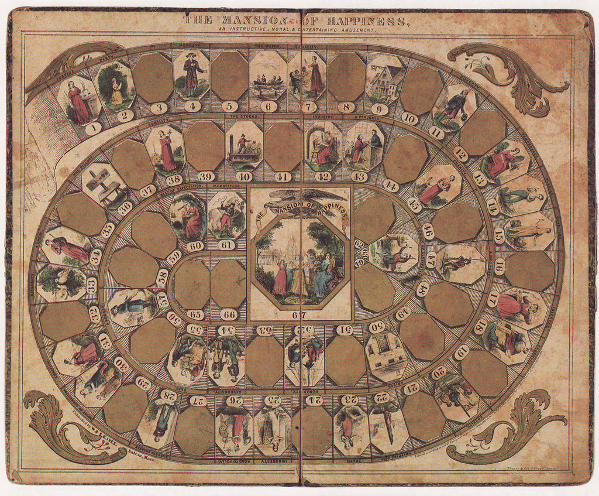

Tech: Now and Then

12 April 2021
A collage of famous board games.
Board games are some of the most iconic things in culture. Board games can connect people all over the world regardless of language, they just have to know the rules. They can also connect so many people at a room once, with many having options for up to 6 players or more. Where did we start with board games though? What was truly the first? And how have they evolved? Well, that question takes us back to about 5,000 BCE, with many cultures inventing their own games to pass the time.
To begin, we'll go over the four kinds of games they had back then: race games, or games where a player has to beat another player by getting to a certain part of the board before their opponent does (think Sorry! or Ludo), space games, where players fill spaces to achieve something (think tic-tac-toe), chase games, where one player specifically tries to take down the other, which has to escape (think Hare & Hounds), and games of displacement, where players try to capture and eliminate each other's pieces (think Chess or Checkers). Now, where were we?
An Egyptian woman playing Senet, the oldest known board game.
Many important historical sites, documents, and artifacts show the kinds of games that would be played in old societies, which most of the time would include some kind of board game. For instance, murals depicting the playing of Senet, the oldest known board game to exist, were found in the First Dynasty and Third Dynasty burial tombs, created in 3100 and 2686-2613 BCE respectively. No actual board of Senet was found, but Middle Kingdom boards still exist. Senet is a race game that involves two players that have about five pawns each rolling ancient dice to move through 30 squares. Think of it as an ancient Chutes and Ladders. There was also another later game in Egypt known as Hounds and Jackals (dated to 2000 BCE), which is a chase game that involves two players, one with 5 jackal heads and 5 dog heads, trying to race to the other side of the 30-holed board to win. The heads were usually made out of a rare material, like ivory or silver. Another ancient board game would be Backgammon, a race/displacement game, which was found in Mesopotamia. Some notable others would be Chess (displacement), Go (displacement), Mancala (race/displacement game), and Patolli (race similar to Sorry!/Ludo).
A European table with two different boards on each side. One side has Chess, and the other has Nine Men's Morris, a popular Roman game.
Board games also have a long history in Europe, with the earliest known record of them being in Homer's Iliad with the mention of Petteia in 800 BCE. Petteia is a game of displacement played on an 8 by 8 square, with players controlling tokens that slide across the board to try to capture one another. The full rules list is here, as it's a lot to explain. Another board game in Europe would be Fidchell, which is an Irish chase game similar to Chess that involves making a clear path for the king to the other side of the board. On another note, games with dice and cards led to all dice/card games (other than backgammon) being treated as lotteries in the gaming acts of 1710 and 1845 in Europe, and as such, being banned. Early board games were made by mapmakers due to the similar process of mapmaking to game board sculpting/creating. The main spread of board games came from the British Empire spreading its influence over many places.
An old board game, The Mansion of Happiness, which was the first successful board game in America.
The first board game in the US was Traveller's Tour Through the United States in 1822, which was a basic race game that used a spinner to get around the use of dice, which was frowned upon. The first majorly successful board game was The Mansion of Happiness, which pitted heavy christian values that eventually lead to the aforementioned title, or heaven. Many other games had these types of values, like The Game of Pope and Pagan and The Siege of the Stronghold of Satan by the Christian Army. Once better printing methods were concieved of in the 1850's, many more board games came out. One of the most famous board games came out in 1860, with the Checkered Game of Life rewarding players for doing mundane tasks and making it through life's ups and downs. There was then the creation of the District Messenger Boy in 1886, which showed a boy that ascends the corporate ladder all the way to the top rung. This idea went on to be an inspiration for 1935's Monopoly, the most commercially successful modern board game.
The late 1900's and onward has seen another major resurface of board games, with the cost of making them and the ability to get them made being significantly lower than they were before. It also helps that many consumers have a lot more leisure time due to the pace of life and amount of freetime drastically changing. The evolution of the internet also helped this, as it made it much easier to communicate and set up a game with people.
In conclusion, board games have massively grown over the recent years, but still show their traditional roots that last to this day. Whether you want to play an old game like Mancala or Backgammon, or you want to play Catan or Monopoly, you'll likely have a good time.